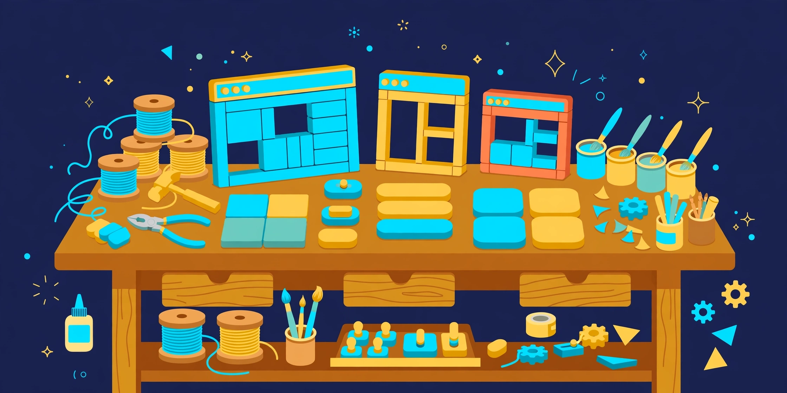

Welcome to the Workshop of Websites — pages on the bench, templates on the shelf, and every site built from real parts.
Meet Webby the Spider, the mascot of this world.
Signature Website Creator builds real websites from plain words. Its database holds 1,000,000 website build records, computed from the creator’s deterministic option archive, with 24 template records filed as JAH-TPL files.
Two working tools, right here on the page. Each one says what it does and what it cannot do. Neither tool reaches the live web, and neither one needs a key.
Enter a website title to get its URL slug, in plain lower-case words joined by dashes.
Title:
Enter one of the 8 styles to count how many of the 24 filed templates use it.
Style:
Designs, printables, and demos — free, downloadable, usable on the page. Every product is labeled Signature or Fun. Nothing here is for sale.
A printable pack of three starter templates: a bakery page, a portfolio page, and a local business page, each with its palette.
Making: print the printable file, pick one template, and copy its palette and sections into the builder.
A string of paper browser windows to hang across a desk, in the Workshop style.
Making: print the printable file, cut out the windows, and string them along a thread.
A set of recipe cards: one card per website kind, with its sections listed.
Making: print the printable file on card, cut out the cards, and deal one when starting a new site.
Download all product lines as a printable (text)
Webby the Spider once wove a website so wide that the whole Workshop fit inside it. The Workshop still fits. (Fun — a made-up tale, not a record.)